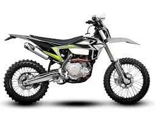

დერტ ტიპის მოტოციკლები
დერტ მოტოციკლები განკუთვნილია გრუნტიან და მთიან გზებზე სვლისთვის. ისინი მსუბუქია და ძლიერი საკიდარი აქვთ.
მათ იყენებენ სპორტულ შეჯიბრებებში, ტრიკებზე და ბუნებაში გასეირნებისთვის. დერტ მოტოციკლი შესანიშნავია თავგადასავლების მოყვარულთათვის.